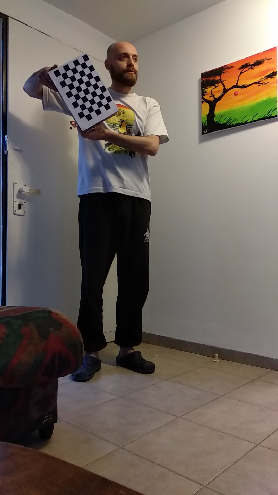
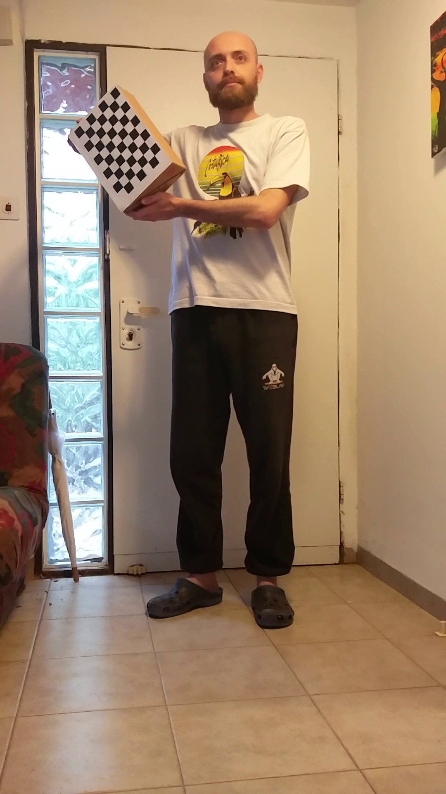
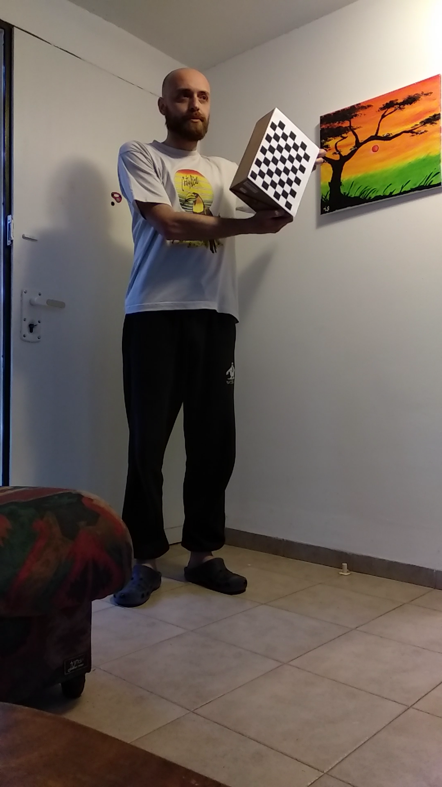
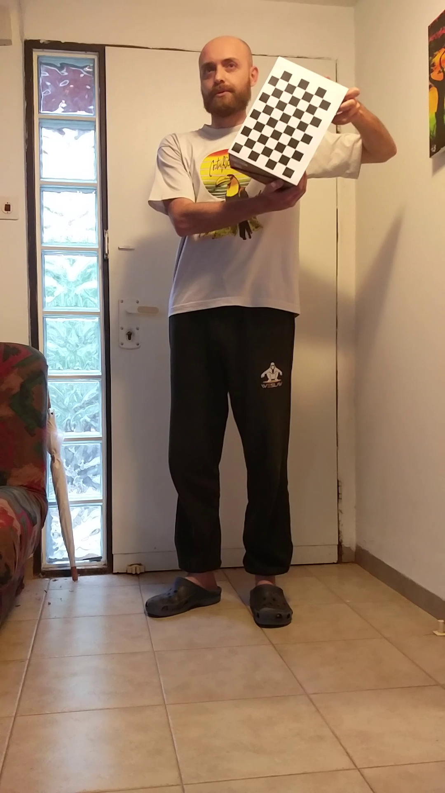
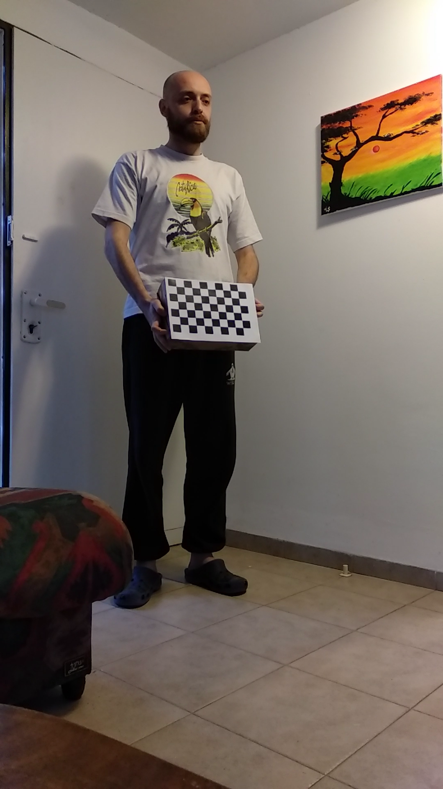
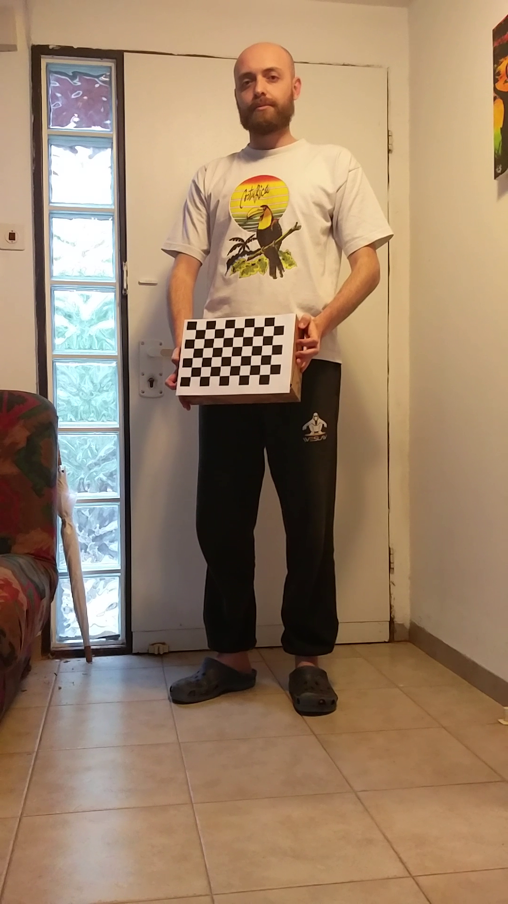
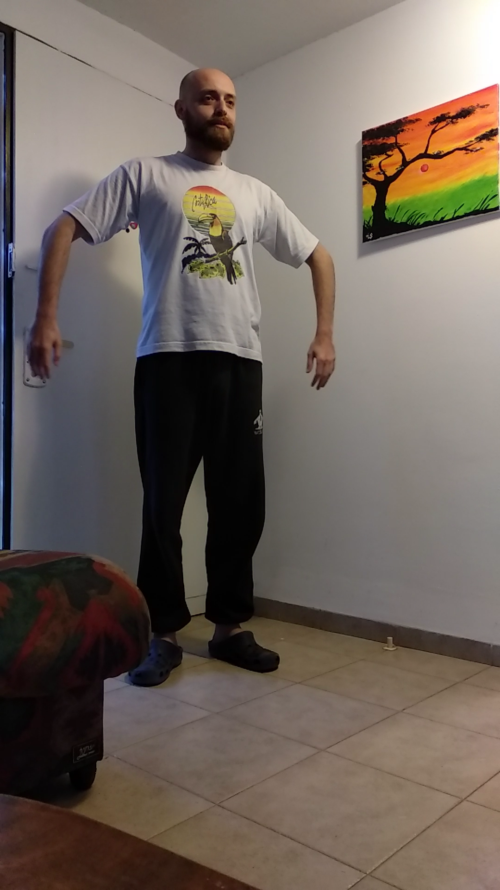
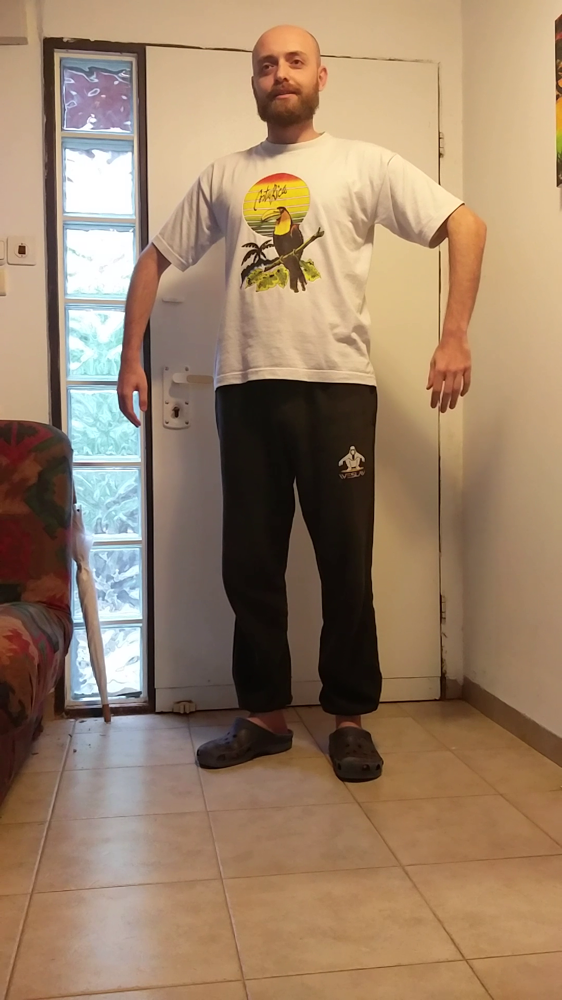

3D skeleton extrapolation
Abstract:
Our aim is to create a system that can generate a 3D skeleton from 2 RGB images,enough to match the Kinect’s 3D skeleton capabilities,and perhaps surpass them.
Technologies:
- OpenPose
- OpeCV (Python)
- MATLAB
Steps:
To do so, we utilized OpenPose and stereo triangulation.
- Set up a stereo system – perform calibration to get the extrinsic and intrinsic matrices of both cameras
- Run OpenPose on the 2 cameras’ images, and get the 2D skeleton
- Using the calibration matrices, triangulate the joints’ location in 3D space
- Compare our generated skeleton to the Kinect's 'ground truth'
Demo:
Camera Calibraion
  Skeleton Creation

Compare to Kinect: